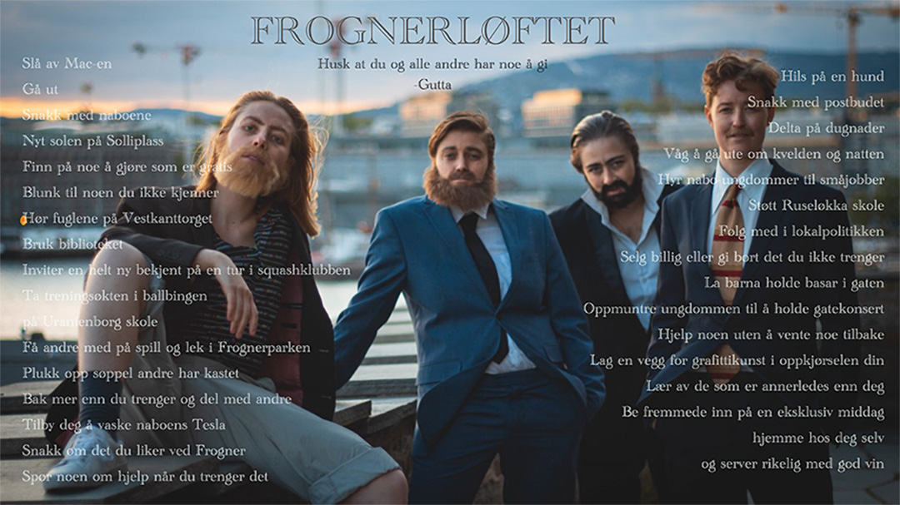

Activism
HOW WE LIFT THE CITY
FROGNERLØFTET (The Lift of Frogner)
Inspired by Oslo City Council and the Norwegian States work with The Lift of Tøyen (a district of Oslo), The Lift of Frogner is a project where Gutta reach out a helping hand to Frogner (a district of Oslo). So that Frogner can reach its highest potential; socially and economically.